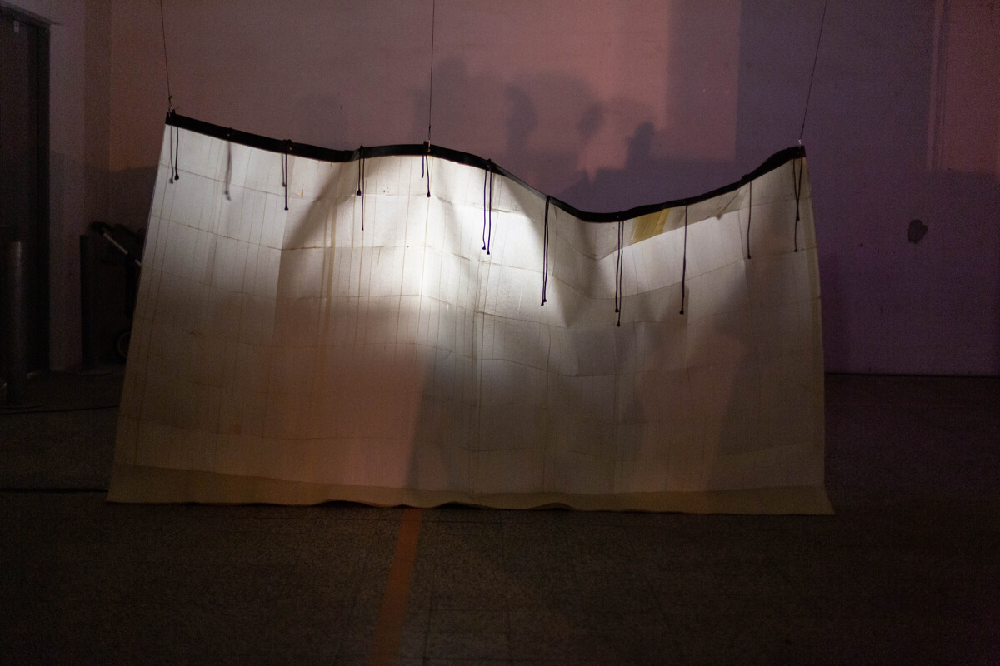
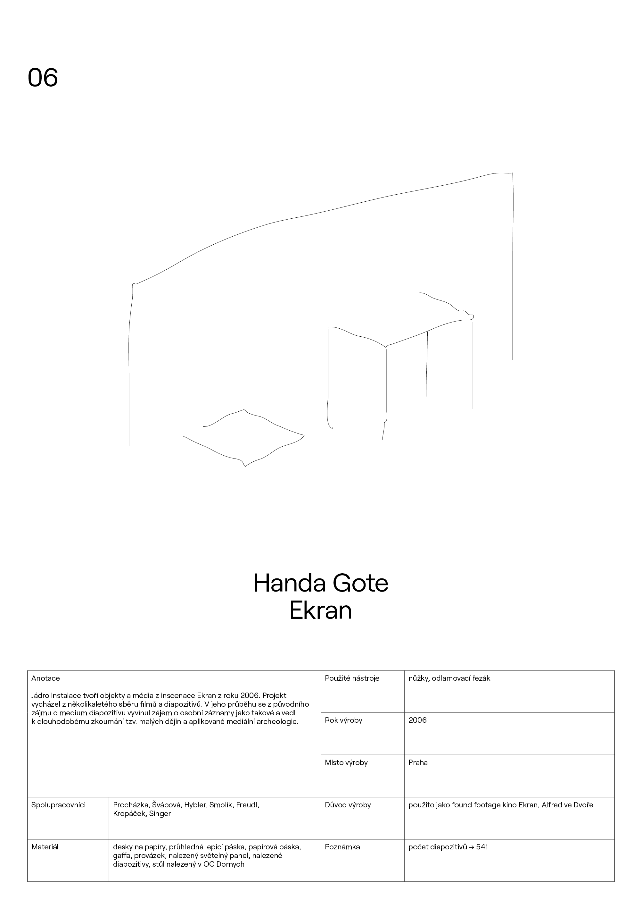

Handa Gote
Děláním věcí směrem k sedimentaci a absentující scénografii
BIO: Handa Gote research
& development se věnuje experimentování s dramaturgií, začleňování
nedivadelních prvků do své práce a vývojem vlastního pojetí
post-dramatického a post-spektakulárního divadla. Dlouhodobě se
inspiruje vědou a technikou. Skupina provádí kontinuální výzkum
divadelní řeči a laboratorní práce v oboru zvukového a světelného
designu, a to při současném kritickém nazírání výše zmíněných disciplín.
Skupina pracuje od roku 2005 na pomezí divadla, současného tance,
vizuálního umění, hudby, performance a konceptuálního umění. Ve své
práci využívá zvukové instalace, pohybové a taneční divadlo, živou
hudbu, výzkum na poli mediální archeologie, výtvarné divadlo a
technologie.Zajímá se o nelineární způsoby vyprávění a aplikování
zkušeností soudobé hudby a vizuálního umění v divadle. V projektech
handa Gote se vždy kreativním způsobem využívají technologie, často
současně staré i ty nejmodernější. Ve většině svých projektů pracuje
skupina s mediální archeologií a v inscenacích, které se blíží
dokumentárnímu divadlu, se intenzivně zabývá tzv. malými dějinami.
Skupina je rezidentním souborem divadla Alfred ve dvoře. Handa Gote je
japonský výraz pro pájku.
O INSTALACI: název: EKRAN
Jádro instalace tvoří objekty a média z inscenace Ekran z roku 2006. Projekt vycházel z několikaletého sběru filmů a diapozitivů. V jeho průběhu se z původního zájmu o medium diapozitivu vyvinul zájem o osobní záznamy jako takové a vedl k dlouhodobému zkoumání tzv. malých dějin a aplikované mediální archeologie.



